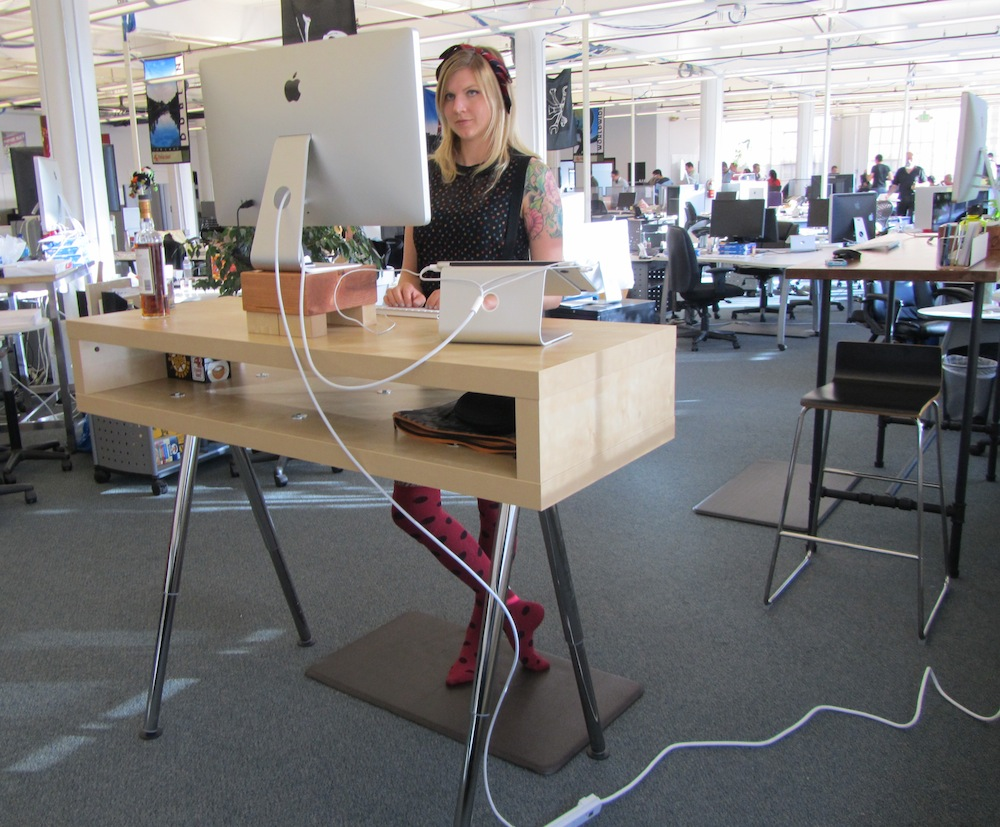
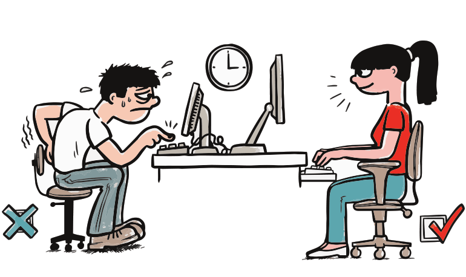
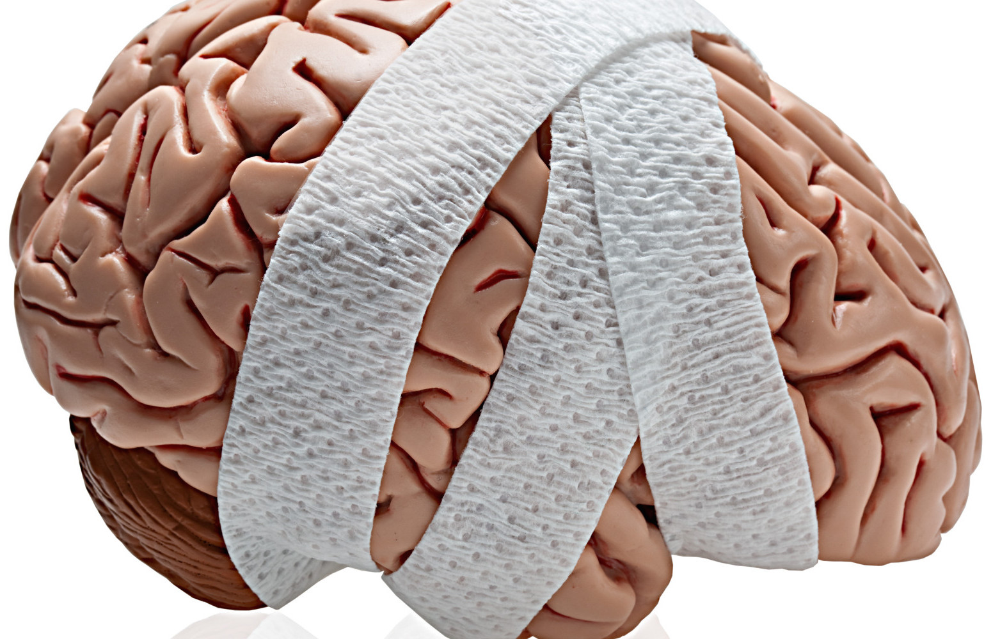
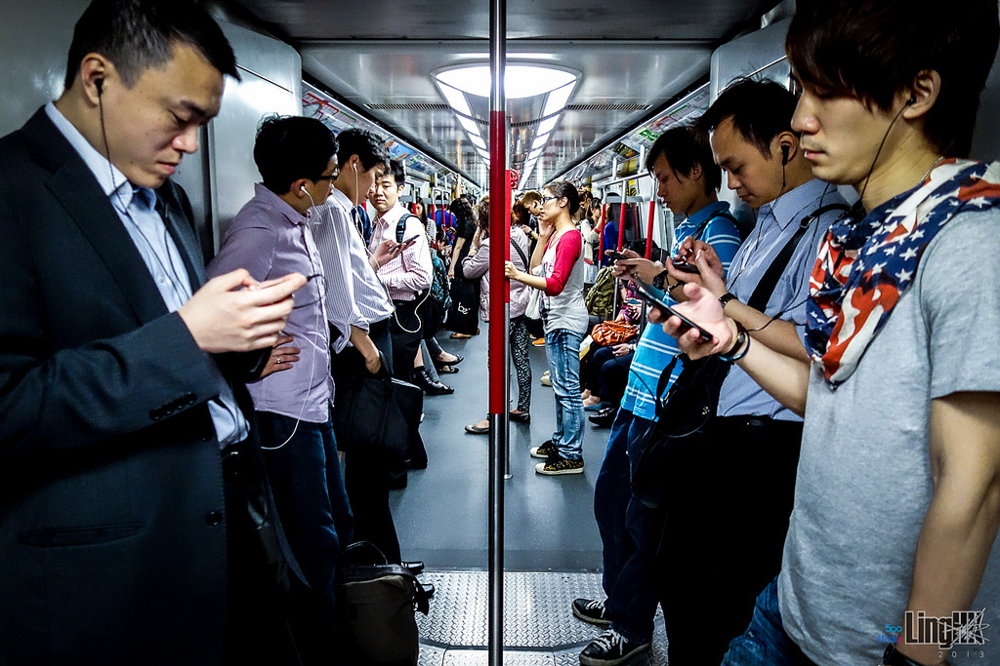
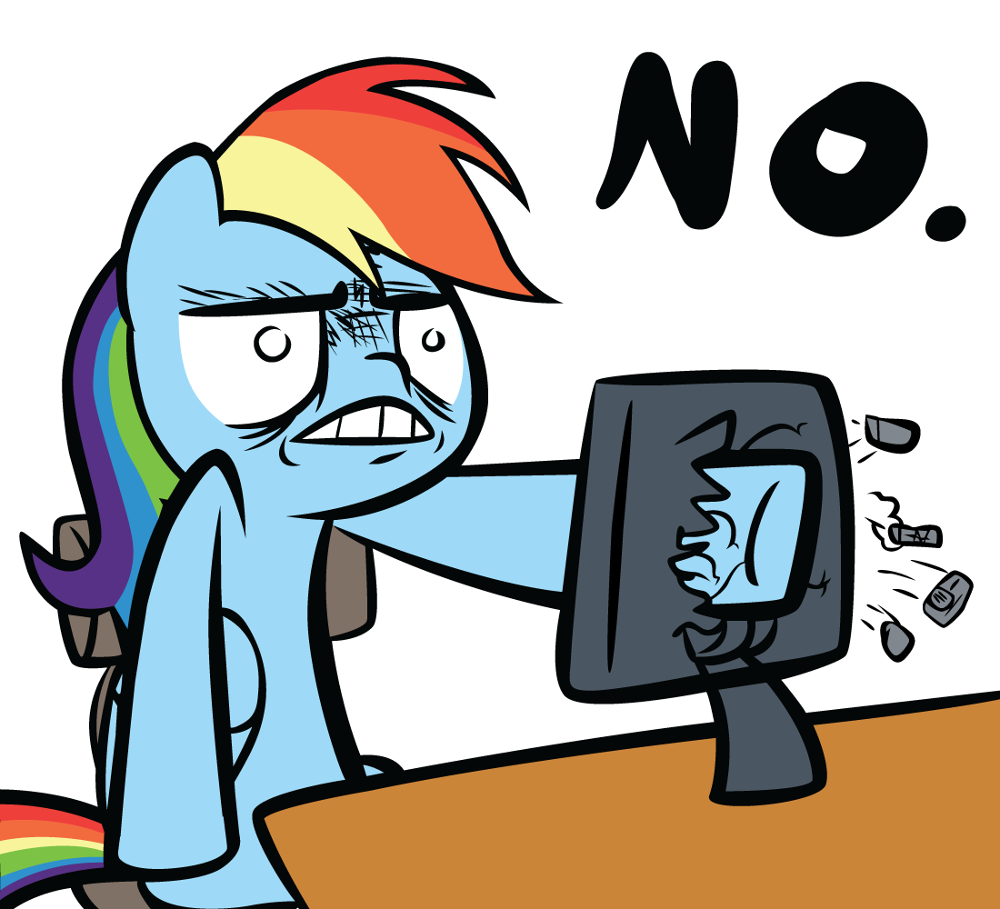
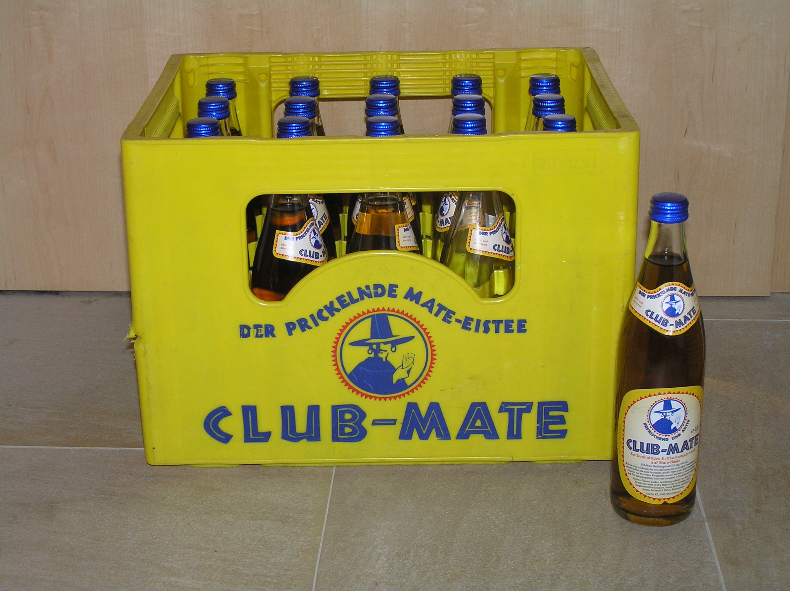
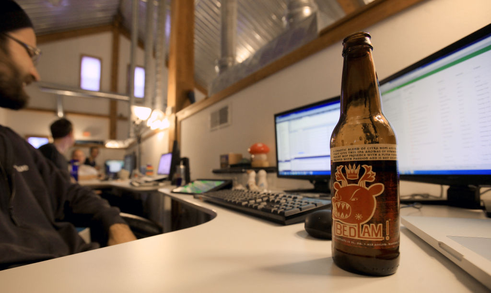
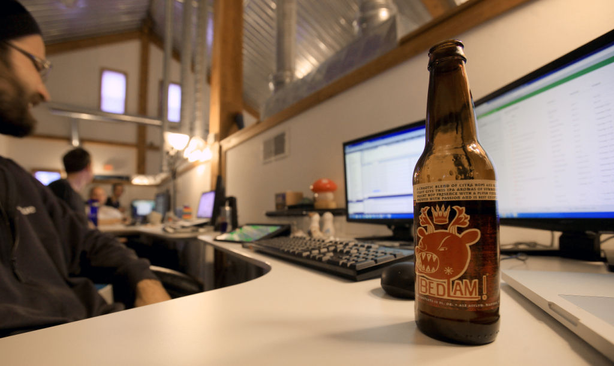

Physical and Mental Health
for dummies geeks developers
@ChrisChinch
Developer Relations, Technical Writer
Hang on, Don't you all
…get paid really well?
…get amazing benefits?
…work in amazingly cool offices?
…spend all day drinking beer/mate, watching cat videos or playing table tennis?
But Still
Your Health is important
What do you notice about these images?
Sitting is (possibly) killing us
112% increase in risk of diabetes
147% increase in cardiovascular events
90% increase in death caused by cardiovascular events
49% increase in death from any cause
Posture and back problems
(NHS)
https://www.washingtonpost.com/apps/g/page/national/the-health-hazards-of-sitting/750/


Why not try…
Short walk every hour
Walking meetings
Stand up every hour
Take the stairs
Walk / Ride to work
(Easy) Running / Swimming
Screen Breaks


Why not try…
Go for a walk
Speak to a stranger
Force social actions
Co-Working
Attend an event
Volunteer
Take a nap
Meditation

Sleep helps…
Immunity
Physical Health
Mental Energy
Focus
(NHS+)

Why not try…
Assumptions are the source of all ****ups
If you don't have time, say so
If you don't understand, ask
If you're uncomfortable, say so
If you have a problem, say so
Diet

 

Why not try…
Fruit (in moderation)
Nuts
Water
Healthy Snacks
Cook together
Going for a walk
Thank you!
Chris Ward
@chrischinch
Developer Relations and Technical Writing for Hire